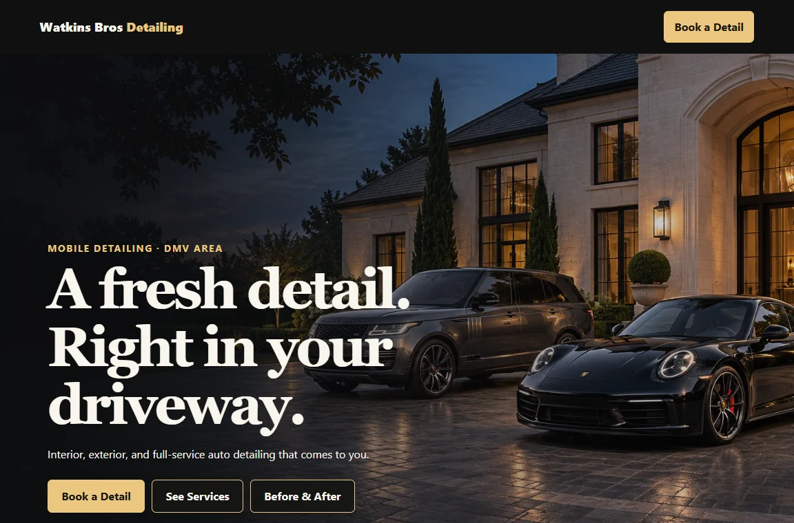

Service website
Watkins Bros Detailing
I built a site for a mobile auto detailing business so visitors could compare interior, exterior, and full-detail packages and find the booking request form.
What I built
I organized service prices around the packages, added a before-and-after gallery, and grouped the content into sections visitors can reach from the main navigation.